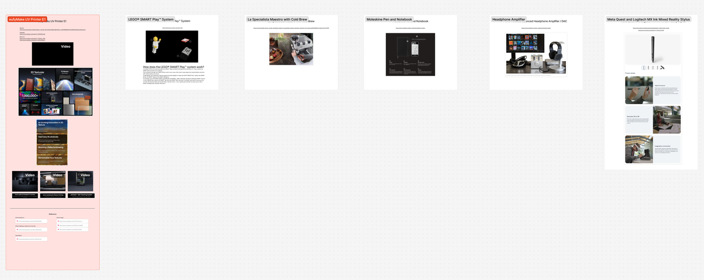
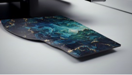
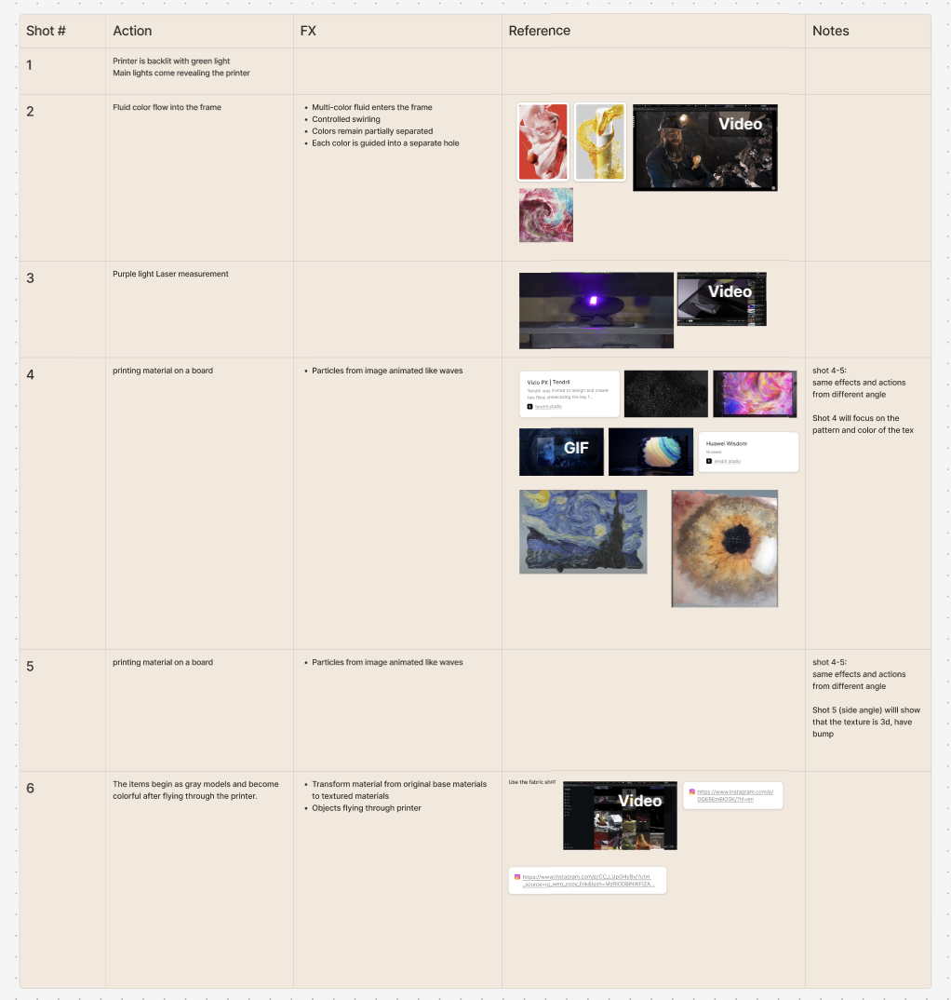

← 部落格 × Harbour × ETC


第 1 週
團隊成員
Yiqi Zheng（特效）
Riley Ho（特效）
Itim Kongsakulvatanasook（特效）
Sofia Mancias（合成）
1 月 10 日
Benji Hopkins（外觀開發）
SCAD × HARBOR × ETC － 第 1 週
大家好，這是我 SCAD × Harbor × ETC 部落格的第一週！
我們提出了六個感興趣的產品，最後決定聚焦在 3D 紋理 UV 印表機，因為它代表一項新興的技術。

目的：
探索先進的列印技術如何成為想像與現實之間的橋樑，把數位創意轉化為實體。
元素：
UV 印表機（eufyMake）：這是我們的主角物件
流動的色彩漩渦：象徵抽象的創意逐漸成形，同時強調真實的色彩還原。
列印出的紋理：列印過程的實體成果，展現數位設計如何變成可觸摸的表面。
材質：各種真實世界的表面，展示印表機的多樣性與實用性。
我們先定義鏡頭，討論後決定做四個鏡頭。每位組員再依照自己的理解與視覺詮釋畫出粗略的分鏡。以下是我們討論的結果。
-
鏡頭 1：展示產品
-
鏡頭 2：色彩旋繞並流進印表機
-
鏡頭 3：展示在各種材質上的列印過程
-
鏡頭 4：從小到大的非平面物件特寫，突顯表面紋理
鏡頭 1
鏡頭 2

AI 生成
鏡頭 3
鏡頭 4
極微距鏡頭：雷射掃過有紋理的表面，
在斜射光下呈現細緻的材質細節。（類似這樣的鏡頭角度）
在不同材質的極微距鏡頭之間硬切，
以連續的雷射動作維持視覺流暢。
這是我們的鏡頭拆解。

這些是我流體模擬的參考。
這是 Itim 做的第一版佈局。
-
繼續調整攝影機運動。
-
做流體漩渦與流體模擬的簡單測試。